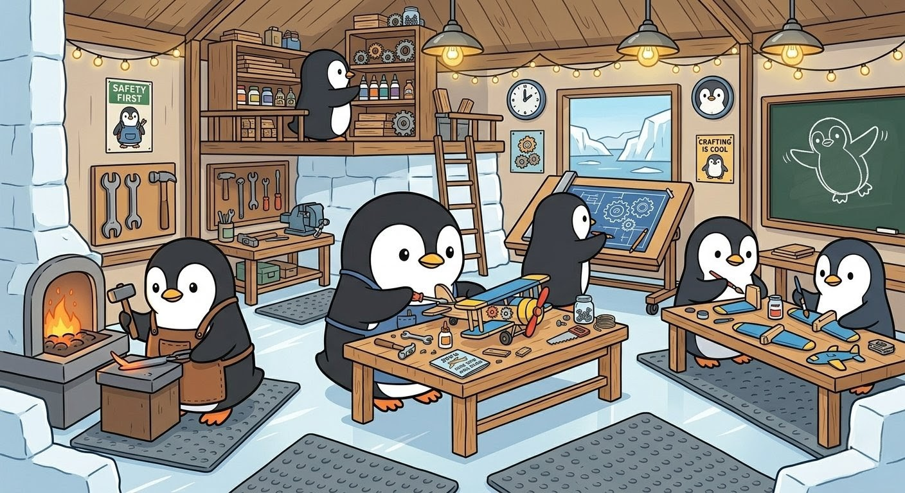

FAIRWELL is a lightweight, static front-end for documenting and navigating First Article Inspection (FAI) verification processes. It turns the web of governing documents, hierarchies, decision flows, and inspection forms into an interactive workspace. No build step, no server, opens straight from a browser.
PolyForm Strict License 1.0.0. The license permits a narrow set of non-commercial personal uses defined in the license text; modification, distribution, and commercial deployment require a separate paid commercial license.
Documents that govern the FAIR process. Each has a distinct role, and they cross-reference each other extensively.
COL-ASQR-PRO-0003 is the enterprise foundation. HSM17 and HSM19 supplement it for P&C. HSM236 operationalizes all of them into the AS9102 FAI forms.
Use this flow when reviewing a FAIR to determine which document to consult for specific questions.
Click any field to see which documents govern it, what to check, and related turnback codes.
Pre-built templates for issuing batch turnbacks. Browse the curated library, fill in placeholder specifics, stack findings, and export a tab-separated block ready to paste into the Findings template. The library is empty by default. Add turnbacks manually or use Load Data to import a data.json file.
Drop in PDFs (Form 1/2/3, PO, CoC, drawings, raw-material certs) and trace any part number, serial number, heat/lot, or spec across all of them. Files never leave your browser, they're parsed client-side with PDF.js.
This feature is under construction. The penguins are hard at work in the workshop, check back soon to see what they've built!
